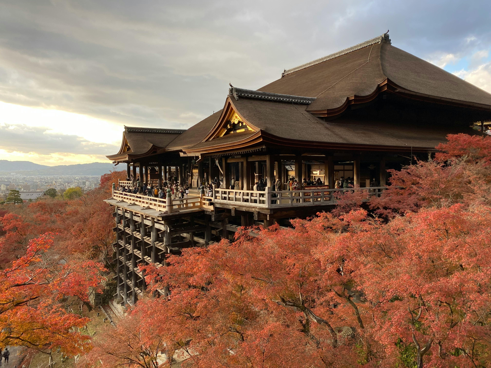

Why Use Nippon Travel by Mana
Clear, Beginner-Friendly Guides
Our guides are designed with beginners in mind, using simple language and step-by-step explanations. You’ll be able to follow along with confidence and start applying what you’ve learned right away!
Save Time Researching
Instead of spending hours sifting through countless sources, you can quickly access what you need—saving valuable time and effort. Perfect for busy people or anyone looking to learn efficiently!
Fully Enjoy Japanese Culture
From traditional buildings and customes to food, language, and modern trends, our content helps you deeply experience the richness of Japanese culture.
Top 3 Japanese Cities to Visit
Explore the best of Japan through its three most iconic cities. Tokyo offers cutting-edge excitement, Kyoto brings timeless tradition, and Osaka delivers lively street culture and amazing food. Together, they highlight the best of Japan in one unforgettable journey.
Tokyo

Kyoto
Osaka